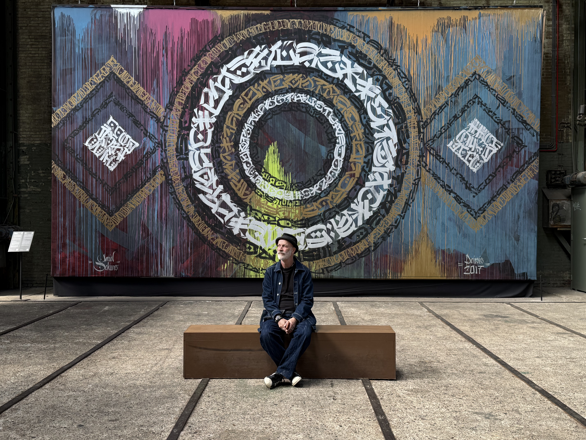
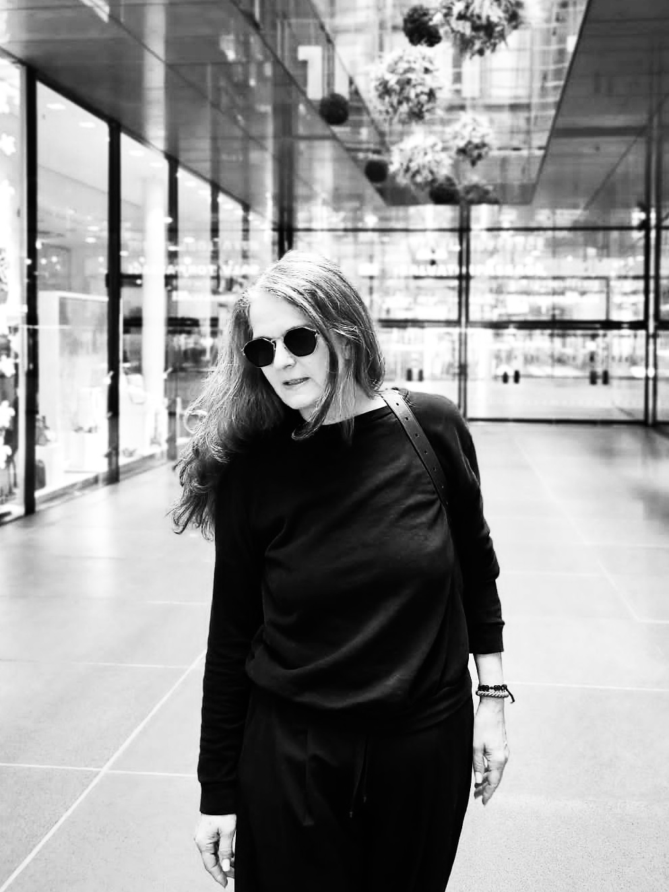

Raum schaffen
Feed
Suche
Menschen
Menschen
Die Schaffensmenschen hinter OFFFEN — Künstler, Kreative und Freigeister.

Herr Neichsner
Performance · München-Giesing

S de Isasi
Raumintervention · München